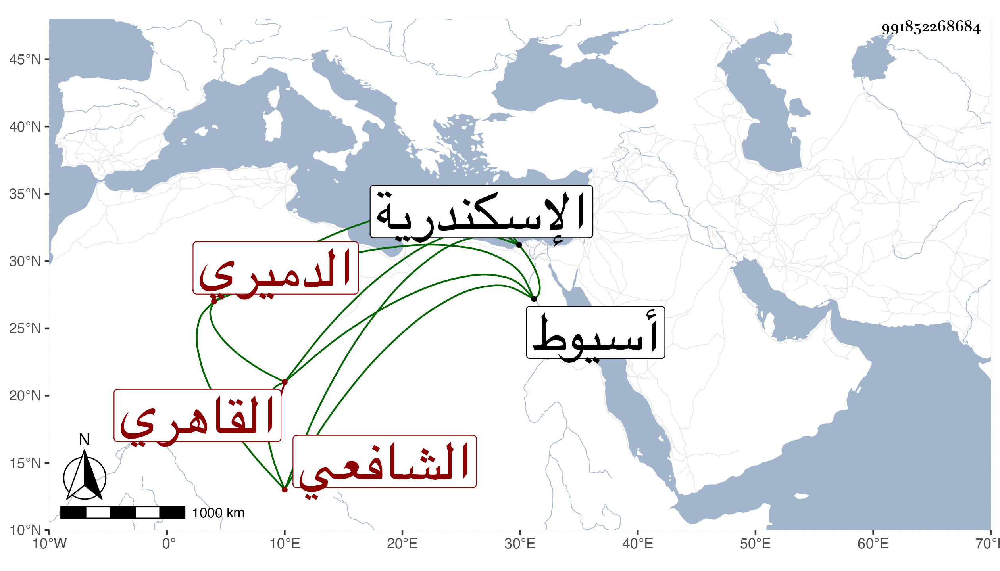

0902Sakhawi.DawLamic.ITO20230111-ara1.EIS1600.991852268684
Biography ID: 991852268684
27
عبد الله بن أحمد بن عمر بن عثمان بن عبد الله بن محمد بن عبد الحق بن عبد الملك بن عبد الله الجمال الدميري الأصل القاهري الشافعي حفيد ابن عم عبد اللطيف بن محمد بن عبد الله الماضي ويعرف بابن البحشور وكان فيما بلغني يغضب منها . ولد في ثامن رمضان سنة خمس وتسعين وسبعمائة بأسيوط وانتقل مع أبيه إلى القران فقرأ القرآن عند الجمال الصفي وحفظ العمدة والتنبيه وعرضهما على جماعة واشتغل في الفقه يسيرا على الجمال القرافي والمحب المناوي وتكسب بالشهادة وسمع على رفيقه في حانوت السروجين الشمس محمد بن قاسم السيوطي جزءا فيه تساعيات العز بن جماعة وحدث به قرأه عليه الطلبة أخذته عنه ورأيت بخطه مصحفا ، ودخل اسكندرية وغيرها وتنزل في صوفية البيبرسية ولقربه من سكن النجم بن النبيه عين الموقعين صار يرتفق به فاشتهر بذلك مع أنه لم يكن في صناعته بالماهر لكنه كان خيرا حريصا على الجماعة مديما للتلاوة عفيفا مرضى الشهادة ، ولما مات النجم جلس موقعا بباب قاضي المالكية ابن حريز حتى مات في ربيع الأول عام ست وسبعين بعد أن مرض بالفالج مدة ، ودفن بالصوفية رحمه الله وإيانا .
